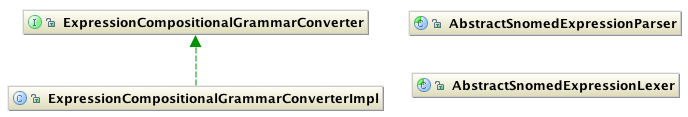

SNOMED CT, Java and MySQL are registered trademarks
This module provides services for converting SnomedConcepts and Expressions, into their XML and compositional grammar forms.
What is it?
This module provides services for converting SnomedConcepts and Expressions, into their XML and compositional grammar forms.
Why do you need it?
XML offers a machine readable and standardised form for serialising and passing objects around. The same applies to SnomedConcepts and Expressions. For this reason, SNOMED CT Expression Converter Service provides this feature out of the box. Since the XML representation of a SnomedConcepts and Expressions creates bulky blobs which are difficult to store, the SNOMED CT Expression Converter Service provides means to generate the terse compositional grammar reprensetations which are more easily stored.
How do you use it?
The following figure illustrates the main classes implemented in this module. This module is split into two
distinct services:
- XML Converter
- Compositional Grammar Converter
Figure 1. Class Model for XML Converter

Figure 2. Class Model for Compositional Grammar Converter

The most important classes in this module are SnomedXMLConverter, ExpressionXMLConverter, HumanReadableRender and ExpressionCompositionalGrammarConverter. These classes provides services for converting SnomedConcepts and Expressions as their suggest. The following is a list of some of the commonly used methods in the above classes.
Important Classes and Methods
SnomedXMLConverter
Please refer to the Javadocs provided for a complete list of methods.
| Method Name | Description |
|---|---|
| getConceptFromXML | returns a SnomedConcept from a given org.jdom.Element. |
| getElementForConcept | gets the org.jdom.Element for a given SnomedConcept |
ExpressionXMLConverter
This class implements the other methods for converting CloseToUserExpressions.
Please refer to the Javadocs provided for a complete list of methods.
| Method Name | Description |
|---|---|
| getElementForNormalForm | gets the org.jdom.Element for a given NormalFormExpression. |
| getNormalFormExpressionFromXML | gets the NormalFormExpression for a given org.jdom.Element. |
ExpressionCompositionalGrammarConverter
Please refer to the Javadocs provided for a complete list of methods.
| Method Name | Description |
|---|---|
| getCloseToUserForm | gets the CloseToUserExpression from a given compositional grammar string. |
| getNormalForm | gets the NormalFormExpression from a given compositional grammar string. |
| getCompositionalForm | gets the compositional grammar string representation of a given Expression. |
Gotchas
Tip:
SnomedXMLConverter and ExpressionXMLConverter currently produce XML
serialisations which are not optimised for human reading. This maybe improve in a future release.
Important:
SnomedXMLConverter and ExpressionXMLConverter currently do not
make any effort to align their schemas with any schemas published by IHTSDO.
Note:
ExpressionCompositionalGrammarConverter uses a SnomedExpressionParser
for parsing compositional grammar forms.